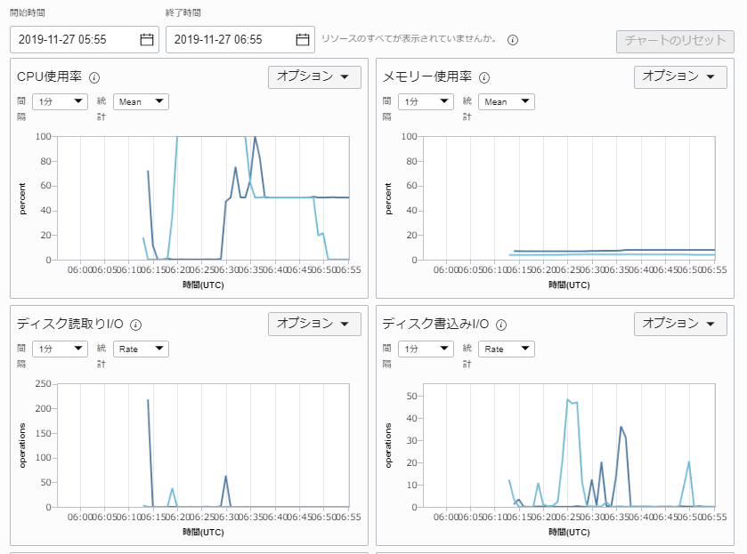
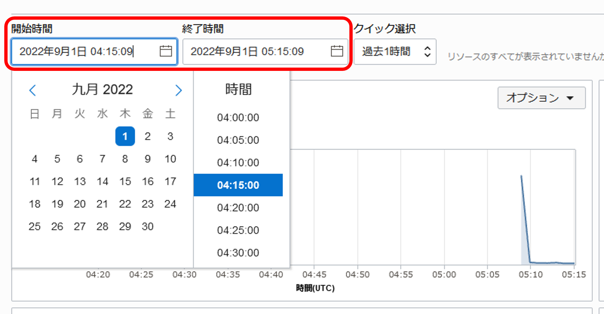
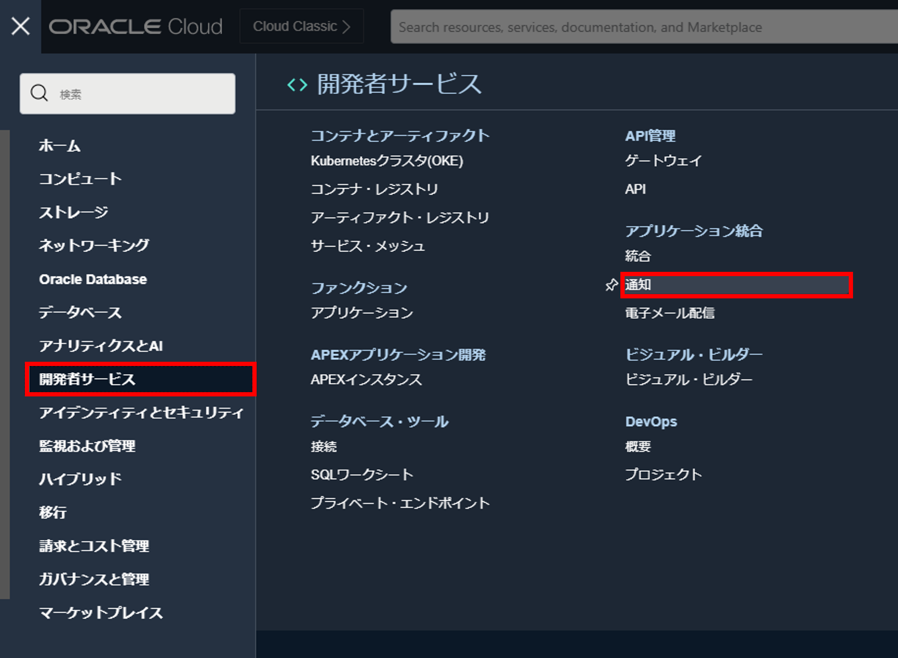
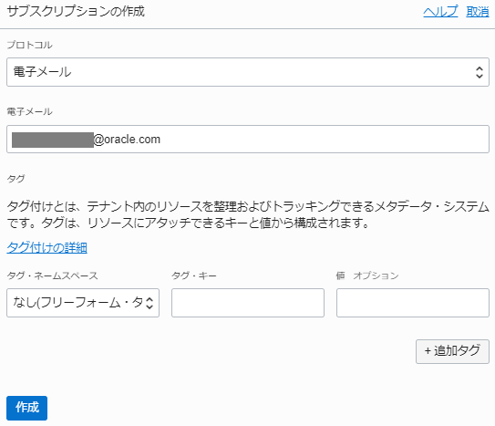
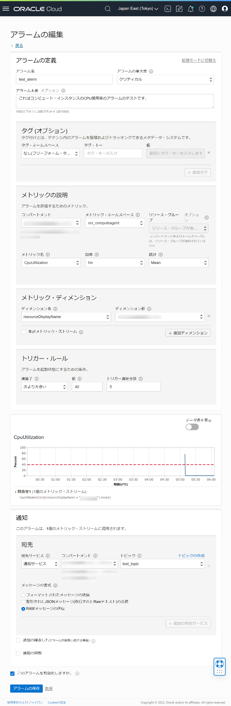
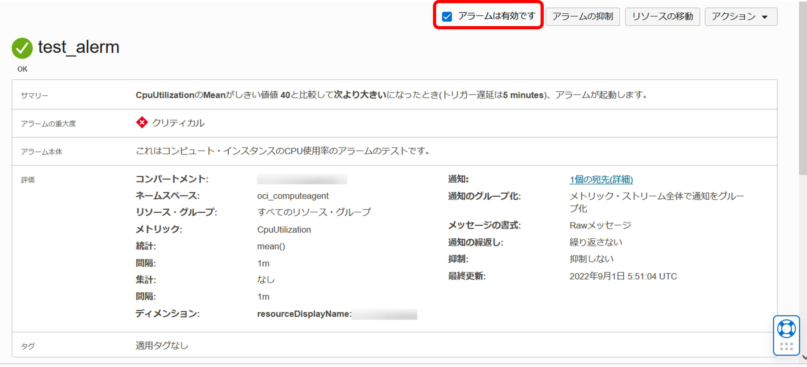

システムを運用する際にはアプリケーションやシステムの状態に異常がないかを監視して問題がある場合には対処をすることでシステムの性能や可用性を高めることが可能です。
OCIで提供されているモニタリング機能を使うことで、OCI上の各種リソースの性能や状態の監視、また、カスタムのメトリック監視を行うことが可能です。また、アラームで事前定義した条件に合致した際には管理者に通知を行うことで管理者はタイムリーに適切な対処を行うことができます。
コンピュートやブロックボリュームなどのOCIリソースに対してはモニタリングはデフォルトで有効になっています。
この章では、コンピュート・インスタンスを対象にして性能メトリックの参照の方法を理解し、問題が発生した場合のアラーム通知設定を行って管理者へのメール通知を行います。
所要時間 : 約30分
前提条件 :
- インスタンスを作成する - Oracle Cloud Infrastructureを使ってみよう(その3) を通じてコンピュート・インスタンスの作成が完了していること
注意 : チュートリアル内の画面ショットについては Oracle Cloud Infrastructure の現在のコンソール画面と異なっている場合があります。
1. ベースになるインスタンスの作成
まずは、監視対象となるインスタンスを作成します。今回は、インスタンスを作成する - Oracle Cloud Infrastructureを使ってみよう(その3) で作成したコンピュート・インスタンスを使用します。
ただし、Oracle提供イメージを使い、モニタリングの有効化を行っているインスタンスのみが対象です（デフォルトは有効）。
インスタンス作成時には、作成画面下部の 拡張オプションの表示 をクリックしてオプションを表示させ、Oracle Cloudエージェント→コンピュート・インスタンスのモニタリング のチェックボックスにチェックが入っていることを確認してください。

2. モニタリング・メトリックの参照（各リソースの詳細画面からの参照）
作成済みのコンピュート・インスタンスの詳細ページから、メトリックを参照することができます。
- コンソールメニューから コンピュート → インスタンス を選択し、作成したインスタンスのインスタンス名のリンクをクリックするか、右側の
 メニューから インスタンスの詳細の表示 を選択し、インスタンス詳細画面を開きます。
メニューから インスタンスの詳細の表示 を選択し、インスタンス詳細画面を開きます。 - 画面左下の リソース から メトリック を選択すると、このインスタンスのCPU使用率やメモリ使用率、Disk IO、ネットワーク転送量などの性能メトリックを参照することが可能です。

3. モニタリング・メトリックの参照（サービス・メトリック画面での参照）
個別のリソースではなく複数のリソースにまたがってメトリックを一覧で参照したい場合は、サービス・メトリックのページからまとめて参照することができます。
-
コンソールメニューから 監視および管理 → 「モニタリング配下」のサービス・メトリック を選択します。

-
サービス・メトリック画面の上部で、表示させたい対象の コンパートメント と メトリック・ネームスペース を選択します。
-
コンパートメント：＜あらかじめ作成したインスタンスの存在するコンパートメント＞
-
メトリック・ネームスペース：oci-computeagent

-
-
CPU使用率、メモリ使用率、ディスクI/Oなどのコンピュートインスタンスに定義されているメトリックのグラフを全て表示することができます。 
-
開始時間、終了時間を変更することで表示する範囲を変更できます。 
4. アラームの通知先の作成
アラーム定義を作成し、メトリックの値がなんらかのしきい値に達したらアラームを発行して通知などを行うことが可能です。
ここでは、インスタンスの死活監視目的で、インスタンスのメトリックが存在しない場合にアラームで検知してメール通知を行う設定を実行します。
- コンソールメニューから 開発者サービス →「アプリケーション統合」配下の 通知 を選択し、通知画面を表示します。 
- トピックの作成 をクリックします。

- トピックの作成 ウィンドウで必要事項を入力し、左下の 作成 ボタンをクリックします。
- 名前 - 任意
- 説明（オプション）

- 作成したトピックの名前のリンクをクリックし、トピックの詳細 画面を表示します。サブスクリプションの作成 ボタンをクリックします。

- サブスクリプションの作成 画面で以下の項目を入力し、左下の 作成 ボタンをクリックします。
- プロトコル - 電子メール を選択(デフォルト)
- 電子メール - 通知先となるメールアドレスを入力 
- サブスクリプションを作成すると、PENDING ステータスとなっています。

- 設定したメールアドレスにOracle Cloudから確認メールが送信されます。メール内のリンクのURLをクリックします。

- Subscription confirmed のページが表示されます。

- 再度コンソール画面に戻ると、通知先の確認が完了したため Active のステータスに変わっています。これでメール通知の設定は完了です。
5. アラーム定義の作成
次に、アラームの定義を作成します。
-
コンソールメニューから 監視および管理 → 「モニタリング」配下のアラーム定義 を選択し、アラーム画面を表示します。アラームの作成 ボタンをクリックします。

- アラームの作成 ウィンドウで以下の項目を入力し、左下の 作成 ボタンをクリックします。
-
アラーム名 - 任意の名前。ここではtest_alarmとしています。
-
アラームの重大度 - ここではデフォルトのクリティカルのままにしています。
-
アラーム本体 （オプション）- 任意
-
タグ（オプション） - 任意
- メトリックの説明
- コンパートメント - メトリックのあるコンパートメントを選択
- メトリック・ネームスペース - oci_computeagent を選択
- リソース・グループ - 空白のまま
- メトリック名 - CpuUtilization を選択
- 間隔 - 1m （デフォルト）
- 統計 - Mean（デフォルト）
- メトリック・ディメンション
- ディメンション名 - resourceDisplayName を選択
- ディメンション値 - 監視対象とするインスタンスの表示名を選択
- トリガー・ルール
- 演算子 - 次より大きい を選択
- 値 - 40
- トリガー遅延分数 - 5
- 通知
-
宛先サービス - 通知サービス を選択
-
コンパートメント - さきほど作成した通知トピックのあるコンパートメントを選択
-
トピック - 先ほど作成したトピック名を選択
-
メッセージの書式 - RAWメッセージの送信
Note
メッセージの書式で「フォーマットされたメッセージの送信」を選択することで、JSONの生データをより見やすいフォーマットで通知を送信することが可能です。各フォーマットのイメージについては ociドキュメント：メッセージの書式および例を参照してください。
-
- このアラームを有効化しますか。 - チェックが入っていることを確認 （デフォルト） 
-
- アラームが作成されました。このアラームが有効になっていることを確認してください。 
6. メール通知されることを確認
アラームと通知の設定ができたので、これでコンピュートインスタンスのCPUメトリックが取得できない状況になればメールで通知されるはずです。
ここでは、stressコマンドでCPU使用率を上げて通知されるかどうかを確認します。
-
インスタンスのパブリックIPアドレスを確認し、このアドレスを使用してteratermなどのターミナルからsshでログインします。
- ユーザー名 - opc
- RSA鍵 - インスタンス作成時に登録した公開鍵に対応する秘密鍵を指定（インスタンスを作成する - Oracle Cloud Infrastructureを使ってみよう(その3) で使用した秘密鍵と同じもの）
-
インスタンスのCPU負荷をあげるために、Linuxのstressコマンドで負荷をかけます。
-
stressパッケージをインストールする準備をします。stressパッケージを含むEPELリポジトリが有効になっているかを以下のコマンドで確認します。
sudo yum repolist all | grep -i epel -
Oracle Linux 7.9イメージで作成されたインスタンスであれば、図のように「ol7_developer_EPEL」リポジトリが表示されます。ステータスが非有効（「disabled」）になっている場合、yum-config-managerコマンドで有効（「enabled」）に変更します。

sudo yum-config-manager --enable ol7_developer_EPEL -
stressをインストールします。
sudo yum -y install stress -
stressコマンドでCPUに負荷をかけます。VM.Standard2.1のシェイプであれば、下記コマンドでCPU負荷が100%になります。
stress -c 2 & -
topコマンドでCPU負荷が約100%になっていることを確認します。Ctrl + C で終了します。
top -c
-
-
コンソール上からもCPU使用率の状況を確認します。コンソールメニューから コンピュート → インスタンス を選択し、モニタリング対象のインスタンスの詳細画面を表示します。メトリックのCPU使用率のチャートを確認し、CPU使用率があがったことを確認します。

-
数分待ちます。
-
メールを受信したことを確認します。

Note
メッセージの書式で「フォーマットされたメッセージの送信」を選択した場合は、以下のようなメッセージが送信されます。

- メニューから、 監視および管理 → 「モニタリング」配下のアラームのステータス をクリックして、アラームのステータスの一覧画面を表示します。起動されているアラームの名前のリンクをクリックしてアラームの詳細画面を表示します。

- アラームが起動された履歴を確認することができます。

アラームと通知の設定が正しくできていることがわかりました。
そのほか、様々なモニタリング・メトリックが事前定義されています。たとえばコンピュート・インスタンスが正しく起動しているかを監視したい場合は、oci_compute_infrastructure_healthメトリック・ネームスペースのインスタンス・ステータスのメトリックを監視します。
用途に応じて適切に監視とアラームの設定をしていきましょう。
以上がモニタリング機能によるリソース監視とアラーム通知による動作です。